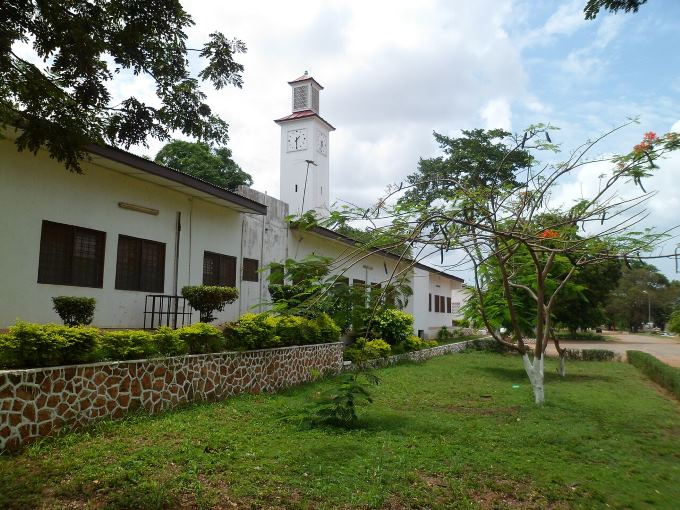

Paul Tetteh Nerquaye-Tetteh | WDD 130
Hello! I am Paul Tetteh Nerquaye-Tetteh from Ghana. I am a very curious man ready to learn and improve myself
mentally and physically.
I aspire to be the best version of myself as possible.
Accra Academy,Ghana

Accra Academy was founded by Messrs. Kofi George Konuah, Samuel Neils Awuletey, Gottfried Narku Alema and James Akwei Halm-Addo on 20 July 1931, at Mantse Agbonaa, a suburb of James Town in Accra.[1] They founded the academy with an initial capital of £200 pooled from their individual contributions. Their aim of founding the academy was to provide access to quality education for students from disadvantaged backgrounds who could not enroll at the limited existing schools due to financial constraints. For this reason, the founders instituted a fee installment policy to encourage and support these disadvantaged students to enroll at the academy.